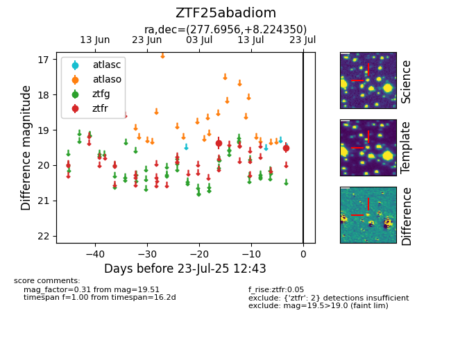

Target ZTF25abadiom at 2025-07-23 12:43, see:
FINK: fink-portal.org/ZTF25abadiom
Lasair: lasair-ztf.lsst.ac.uk/objects/ZTF25abadiom
ALeRCE: alerce.online/object/ZTF25abadiom
alt names
ZTF25abadiom (ztf,fink)
coordinates:
equatorial (ra, dec) = (277.6956,+8.22435)
galactic (l, b) = (37.9582,+8.30880)
photometry
last ztfr=19.51
2 ztfr detections
